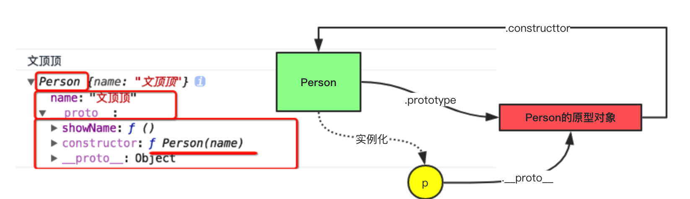
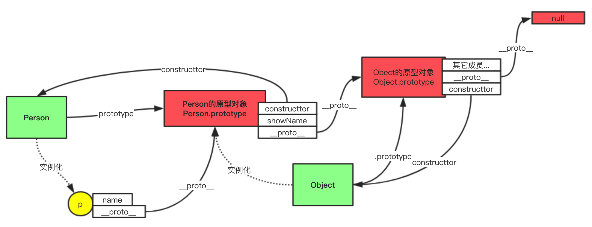

javaScript系列 [03]-javaScript原型对象
引用： javaScript是一门基于原型的语言，它允许对象通过原型链引用另一个对象来构建对象中的复杂性，JavaScript使用原型链这种机制来实现动态代理。当试图去引用某一个属性时，它会遍历整个原型链，直到最后的节点。JavaScript专家编程·P24
1.1 原型对象说明
在JavaScript中除了基本数据类型外的其它数据都是对象类型，包括对象、函数、数组等,它们跟原型对象密不可分。
JavaScript语言中有一个非常重要的概念，叫做原型对象，理解原型对象是进一步理解这门语言的基础，因为它是一门基于原型的语言，也因为所有的代码几乎都和原型对象有关，接下来我们先了解下原型对象是什么。
原型对象
在上一篇文章JavaScript系列 [02]-javaScript对象探析中，我们介绍了使用自定义构造函数创建对象的方式，在构造函数被创建出来的时候，系统会默认帮构造函数创建并关联一个Object类型的新对象，我们称该对象就是这个构造函数的原型对象，构造函数的原型对象默认是一个空对象。
1.2 原型对象的性质
构造函数相关联的原型对象的成员（属性和方法），可以被使用该构造函数创建出来的对象访问，即以自定义构造函数方式创建出来的所有实例对象，都自动拥有和共享该构造函数原型对象中的所有属性和方法(想一想为什么空对象可以使用toString方法，所有的数组都可以使用push等方法)。
代码示例
1 | //01 声明构造函数Person |
代码说明
☞ 上面的代码先提供了Person构造函数，该函数声明后，我们通过Person.prototype访问其原型对象打印得到一个Object类型的空对象，说明所有的构造函数创建后默认拥有prototype属性，即构造函数默认有一个相关联的原型对象（Object类型空对象）。
☞ 随后我们通过对象的动态特性给Person的原型对象添加了showName方法，通过打印结果可以验证构造函数的实例化对象(p)可以访问其原型对象上面的成员。
通过对代码和其运行结果分析，我们不难得出构造函数（Person）、原型对象(Person.prototype)、实例对象（p）之间的关系图，如下。
代码说明
① 实例对象p由Person构造函数实例化而来。
② Person构造函数可以通过prototype属性访问其原型对象。
③ 实例对象p可以通过__proto__属性访问其构造函数的原型对象（可以简称为p的原型对象，我们在说原型对象的时候，应该先确定主语是构造函数还是实例对象，如果主语是构造函数，那么指的是构造函数.prototype，如果主语是实例对象，那么指的是创建该实例对象的构造函数相关联的原型对象，表示为实例对象.__proto__）。
④ 原型对象（Person.prototype）可以通过constructor(构造器)属性来访问其关联的构造函数，无法访问实例对象。
下面贴出上面代码更详细的原型结构关系图。
原型对象的访问
1 | //获取原型对象的方式 |
总结一下，原型对象的访问方式如下
① 构造函数.prototype ② 实例对象.__proto__ ③ Object.getPrototypeOf(实例对象)
原型对象总结
❐ 所有的对象都拥有
__proto__属性，函数既拥有prototype属性又拥有__proto__属性。
❐ 对象的__proto__属性指向其构造函数相关联的原型对象（函数的__proto__属性也一样，指向其构造函数Function相关的原型对象，是一个空函数）。
❐ 函数的prototype属性指向默认相关联的原型对象（函数和构造函数本质无差别）。
1.3 设置原型对象
所谓设置原型对象就是给构造函数的原型对象添加成员（属性和方法），具体的方式有两种
① 利用对象的动态特性设置
② 替换原有的原型对象
代码示例
1 | //01 声明构造函数Person |
像上面代码这样直接利用对象的动态特性来设置原型对象，在原有原型对象的基础上添加属性和方法非常简单，但是如果要添加的方法或属性比较多，那么冗余代码会比较多，这种情况推荐直接替换原有的原型对象。
1 | //01 声明构造函数Person |
注意 如果是直接替换原型对象，那么需要修正构造器属性，让constructor指向构造函数。说明 因为替换的时候其实是用字面量的方式重新创建了新的对象，该对象作为Object构造函数的原型对象，内部没有constructor属性。这个时候如果要通过实例对象（比如p）的构造器属性判断其类型，那么会先在p身上找，没有则查找原型对象发现也没有，最终得到的Object.prototype身上的构造器属性，结果为Object 。